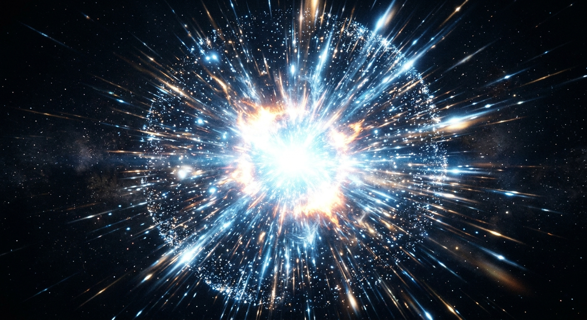
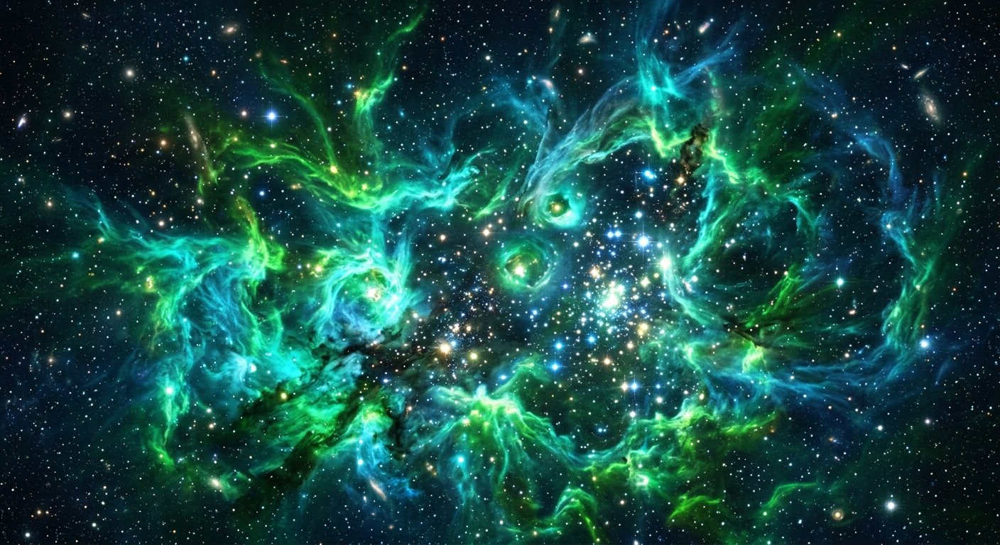
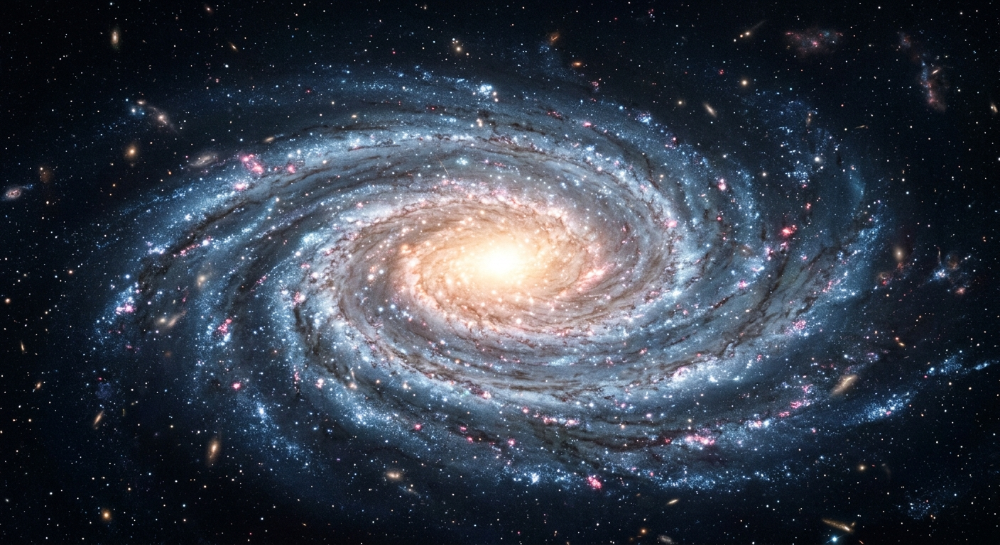

Tracking the evolution of cosmic timeline. Each node represents a breakthrough in the gramd timeline of the universe.
"Wait, so everything was once smaller than an atom? That changes my whole perspective on existence. Matter, space, and time itself condensed to a single dot."
Explored the singularity and the rapid expansion of spacetime. Understanding the cosmic microwave background radiation as the echo of creation.

From nebulas to red giants. We are literally made of star-stuff; the heavy elements in our bodies were forged in the hearts of dying stars.

"Iron is the stellar killer. Once a star starts producing iron at its core, it can no longer generate energy via fusion. The end is near. Cosmic irony."
"The Milky Way isn't just a static circle; it's a spiraling dance of billions of suns, all anchored by a massive supermassive black hole at its core."
Investigated the role of dark matter in pulling the first galaxies together. The structure of the universe is like a magnificent cosmic web.
